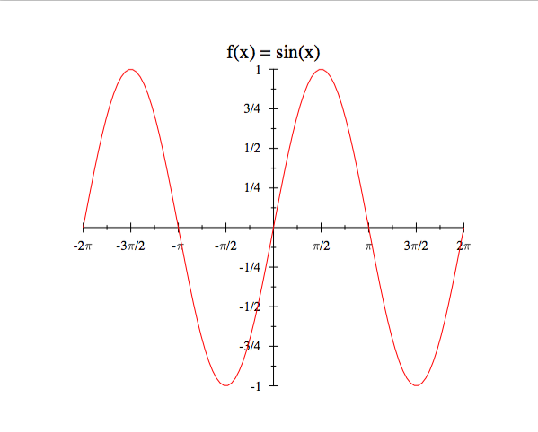

<!DOCTYPE html PUBLIC "-//W3C//DTD XHTML 1.0 Transitional//EN" "http://www.w3.org/TR/xhtml1/DTD/xhtml1-transitional.dtd">
<html xmlns="http://www.w3.org/1999/xhtml">
<head>
  <meta http-equiv="Content-Type" content="text/html; charset=utf-8" />
  <meta http-equiv="Content-Style-Type" content="text/css" />
  <meta name="generator" content="pandoc" />
  <title></title>
  <style type="text/css">code{white-space: pre;}</style>
</head>
<body>
<p>Assignment 2 - Nina Bartmann </p>
<p>In this assignment, I am presenting two questions. The first question is taken from an assignment based on the course “Economics and Psychology of Social Norms and Strategic Behavior” and the second question is taken from the course “Game Theory 1”.</p>
<p>Given: , assume player 2 (the worker) has inequality averse preferences (a la Fehr-Schmidt). Determine how the effort level e chosen by the worker will depend on the wage w chosen by the employer. Next, do the same if we assume that player 1 (the employee) also has inequality averse preference (a la Fehr-Schmidt). Determine the wage player 1 will set when (s)he anticipates correctly how the effort level depends on the wage.</p>
<p>Total Utility for player 2: <br /><br /> <br /><br /></p>
<p>Player 2 maximizes total utility by minimizing: <br /><br /></p>
<p>Solution: <br /><br /> Player 2 will set his effort level at  of his wage.</p>
<p>Total Utility for player 1: <br /><br /></p>
<p>Player 1 can expect that player 2 will set his effort level  <br /><br /></p>
<p>Player 1’s total utility increases with wage, therefore, he will choose the maximum level that he can choose for wage in order to maximize his utility. He will choose w = 1</p>
<p>Inequality Aversion (Bolton-Ockenfels) <br /><br /> <br /><br /> <br /><br /> Regardless of the measure of inequality aversion ,  is always smaller compared to allocations under A or B. Hence, utility under C is highest.</p>
<p>Determining the Quantal Response Equilibrium (Section 6.2.5 of Cartwright): <br /><br /> <br /><br /></p>
<p>Game Theory 1: Assignment 1 Question: Derive the Nash equilibrium in pure strategies if the firms choose their quantities simultaneously. What happens if n approaches infinity?</p>
<p>Solution: Each firm i maximizes profits  (P-c) = (a - c - (</p>
<p>FOC: <br /><br /> Because of symmetry we have:  for all  in equilibrium. Hence , which is strictly decreasing in n.</p>
<p>For  we have , i.e. each firm captures an ever decreasing market share (and profits). Since , which is increasing in n, total output increases. Hence, P decreases and approaches the limit result P* = a - Q* = a - (a - c) = c.</p>
<p>&gt;On a final note, I will add a graph to this document.&lt;</p>
<p></p>
</body>
</html>
